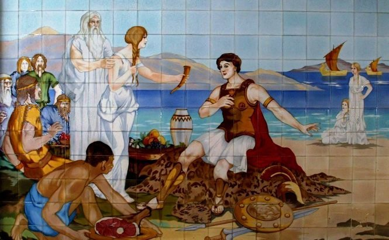
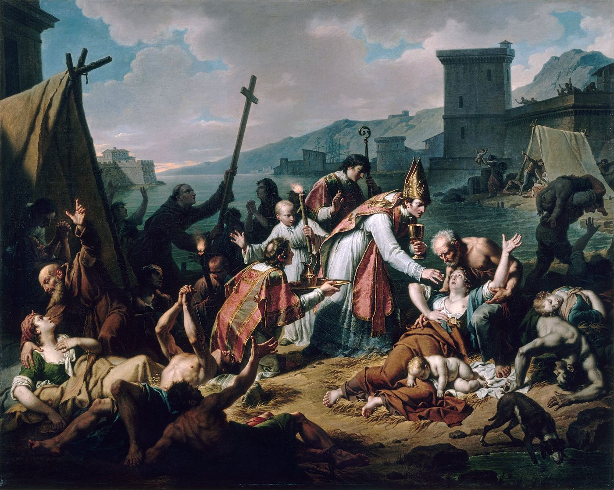
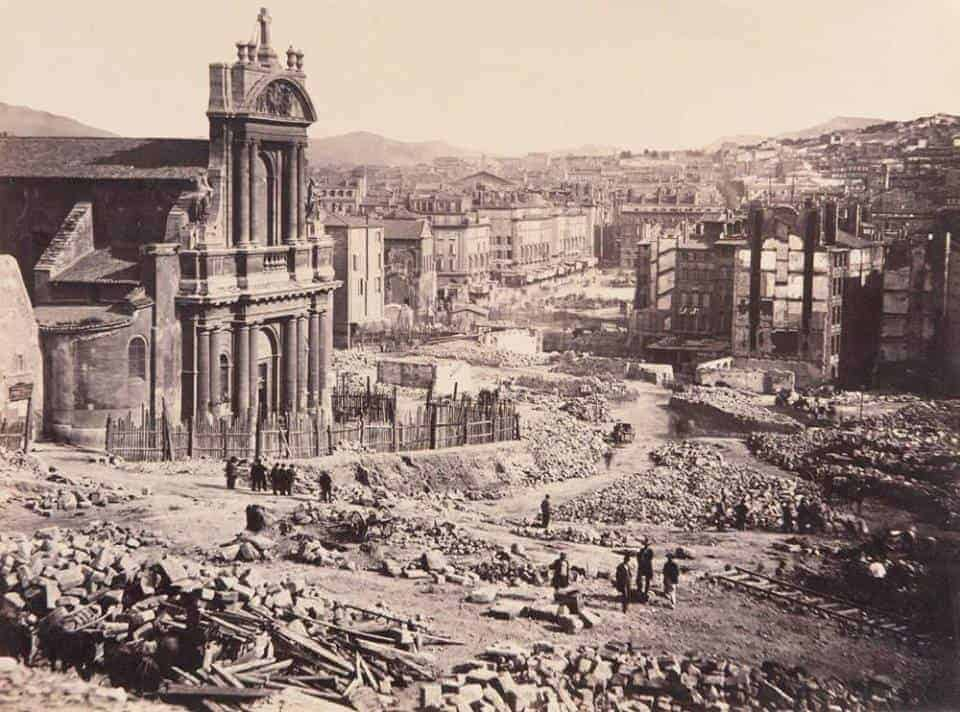
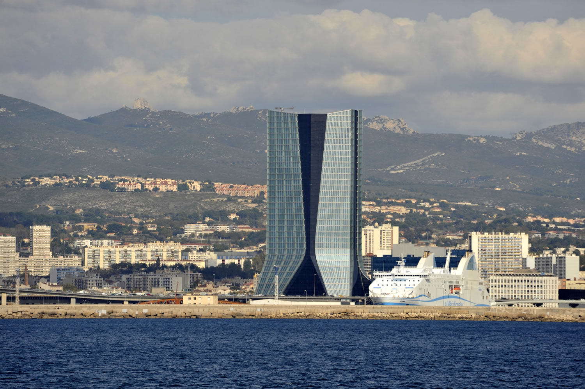

Dés le paléolithique, les premieres traces d'occupation humaine sont attestées dans les calanques de marseille au niveau de la grotte Cosquer dont les peintures rupestres sont datées de 27 000 ans av J-C.
Massalia serait née de l'union d'une princesse autochtone, ''Gyptis'', avec un navigateur venu de Phocée en Asie mineure, Protis, qui allait créer un comptoir grec sur les reives du Lacyodon, notre actuel Vieux-Port. Cette rencontre portait deja en germe les valeurs d'ouverture au monde qui demeurent, ving-six siècles plus tard, la marque de la cité phocéenne.
Gyptis et Protis
Rebelle à l’autorité royale, Marseille est soumise en 1660 par les troupes de Louis XIV. Le Roi Soleil fait construire de part et d’autre de la passe le fort Saint-Jean et la citadelle Saint-Nicolas dont les canons sont braqués sur la ville. Son autorité affirmée, il initie à partir de 1666 une importante opération d’urbanisme qui fait sortir Marseille de son rempart médiéval. La superficie de la ville est triplée avec la création du Cours, de l’arsenal des galères, d’un nouvel Hôtel de Ville, de l’hôpital général de la Charité confié à Pierre Puget…
La peste de 1720, apportée par le « Grand Saint-Antoine », vient briser cet élan. La moitié de la population marseillaise est alors décimée par l’épidémie. Mais Marseille va une nouvelle fois rebondir. Elle trouve un nouvel élan économique dans l’ouverture aux mondes océaniques qui permet à ses grands négociants cultivés de prendre l’ascendant sur la noblesse locale.
Marseille et la peste
Acquise aux idéaux révolutionnaires, la ville lève un bataillon de fédérés qui « montent » à Paris, en juin 1792, afin de défendre la Révolution menacée. La reprise de leur chant de marche, initialement écrit par Rouget de l’Isle pour l’armée du Rhin, deviendra notre hymne national.
Le Second Empire est une nouvelle période faste pour Marseille. Le port se dote de nouveaux bassins à la Joliette, les lignes ferroviaires et la gare Saint- Charles révolutionnent les transports. Les industries se développent et les compagnies maritimes accompagnent l’essor de l’empire colonial. La population est multipliée par 3,5 dans une ville qui connaît une impressionnante mutation urbaine - percement de la rue de la République et du boulevard Charles Livon, arrivée de l’eau au Palais Longchamp, construction de la préfecture, du palais du Pharo, de la cathédrale de la Major et de Notre-Dame-de-la-Garde…
Chantier de la rue de la République
À cette phase de grande prospérité qui permet d’intégrer de nombreuses communautés étrangères, succède un nouveau recul lié à la décolonisation puis à la désindustrialisation.
À l’aube du troisième millénaire, Marseille se relance une nouvelle fois en appuyant désormais son développement sur l’économie de la connaissance, la recherche, la logistique portuaire, les nouvelles technologies et le numérique, un secteur tertiaire dont l’essor est symbolisé par le succès d’Euroméditerranée, ou encore sur sa vitalité culturelle et ses atouts touristiques enfin valorisés.
Tour cma cgm